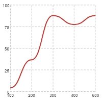
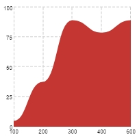
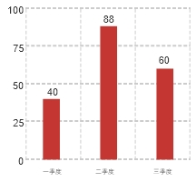
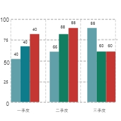
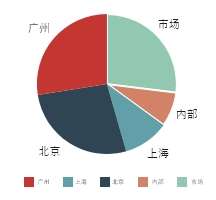

<nz-page-header nzBackIcon>
  <nz-page-header-title>生成报表
    <!-- <button nz-button nzType="secondary" style="margin-left: 20px;" nzSize="large" (click)="chooseChart()">
      选择图表
    </button> -->

  </nz-page-header-title>
  <nz-page-header-subtitle>
    <div>
      <nz-steps>
        <nz-step nzTitle="选择模版" nzStatus="finish" nzIcon="solution"></nz-step>
        <nz-step nzTitle="录入数据" nzStatus="finish" nzIcon="solution"></nz-step>
        <nz-step nzTitle="生成报表" nzStatus="process" nzIcon="loading"></nz-step>
        <nz-step nzTitle="驾驶舱" nzStatus="wait" nzIcon="solution"></nz-step>
        <!-- <ng-template #iconTemplate><i nz-icon nzType="smile"></i></ng-template> -->
      </nz-steps>
    </div>

  </nz-page-header-subtitle>
  <nz-page-header-extra style="width: 30%;">
    <button nz-button nzType="primary" style="margin-left: 20px;" nzSize="large" (click)="isSaveReport()">
      保存报表
    </button>
    <button nz-button nzType="primary" style="margin-left: 20px;" nzSize="large" (click)="pushReport()">
      推送报表
    </button>
    <nz-modal [(nzVisible)]="isChooseUser" nzTitle="选择用户" (nzOnCancel)="pushCancel()" (nzOnOk)="reportOk()">
      <ng-container *ngFor="let user of userList">
        <button nz-button nzType="primary" style="margin-left: 20px;" nzSize="large" (click)="chooseUser(user)">
          {{user.get('nickname')}}
        </button>
      </ng-container>
    </nz-modal>
    <button *ngIf="cate != '财务报表指标' && cate != 'dynMFtj3aH'  " nz-button nzType="primary" (click)="makeCockpit()"
      nzSize="large">制作驾驶舱</button>
  </nz-page-header-extra>
</nz-page-header>
<nz-content >
  <ng-container *ngIf="cate != '财务报表指标' && cate != 'dynMFtj3aH'">
    <nz-tabset style="margin: 0 auto;" nzSize="large" [nzType]="'card'" [nzSelectedIndex]="reportTabsIndex">
      <nz-tab nzTitle="默认图表" [(ngModel)]="reportType" ngDefaultControl>
        <ng-container>
          <div style="margin-bottom: 10px; margin-top: 10px; border-top: 1px solid #5e5e5e;">
            <button *ngFor="let item of mainTab[0]" nz-button nzType="primary" style="margin-left: 20px;width: 100px;"
              nzSize="large" (click)="salesTab(item)">
              {{item.name}}
            </button>
          </div>
          <div style="margin-bottom: 10px;">
            <ng-container *ngFor="let item of mainTab[1]">
              <button nz-button nzType="primary" style="margin-left: 20px; width: 100px;" nzSize="large"
                (click)="cateTab(item)">
                {{item.name}}
              </button>
            </ng-container>
          </div>
          <h3 style="height:60px; text-align: center;  line-height: 60px;">{{tagName}}</h3>
          <div class="report-box">
            <ng-container *ngIf="tags[0] == '全部' && tags[1] == '全部'">
              <ng-container *ngFor="let report of ReportArray; let i = index">
                <div class="chart" *ngIf="report.chartOption&&report.chartOption.title">
                  <div echarts [merge]="report.chartOptionNew" [options]="report.chartOption" class="demo-chart"></div>

                  <input [(ngModel)]="report.desc" nz-input placeholder="请输入批注" nzSize="default"
                    style="width: 50%; margin-left: 10px; background-color: rgba(a4, 92, 93, 0.5); color: black;" />
                  <button nz-button nzType="primary" style="margin-left: 2%; width: 80px;" nzSize="default"
                    (click)="chooseChart(report)">
                    切换图表
                  </button>
                  <ng-container *ngIf="report.view != 'pie'">
                    <nz-select (ngModelChange)="unitChange($event, report, i, unit[i])" [ngModel]="unit[i]"
                       style="margin-left: 2%; width: 100px; display: inline-block;">
                      <nz-option [nzValue]="'default' + i" nzLabel="单位:默认"></nz-option>
                      <nz-option [nzValue]="'k' + i" nzLabel="单位：千"></nz-option>
                      <nz-option [nzValue]="'w' + i" nzLabel="单位：万"></nz-option>
                    </nz-select>
                  </ng-container>
                </div>
                <div *ngIf="!(report.chartOption&&report.chartOption.title)" class="no-data">暂无数据</div>
              </ng-container>
              <!-- <div echarts [options]="report.chartOption" class="demo-chart"> -->
              <!-- </div> -->
            </ng-container>
            <ng-container *ngIf="tags[0] == '全部' && tags[1] != '全部'">
              <ng-container *ngFor="let report of ReportArray; let i = index">
                <div class="chart"
                  *ngIf="report.chartOption&&report.chartOption.title && (('tem' + report.tags).indexOf(tags[1])>0)">
                  <div echarts [options]="report.chartOption" class="demo-chart"></div>

                  <input [(ngModel)]="report.desc" nz-input placeholder="请输入批注" nzSize="default"
                    style="width: 56%; margin-left: 10%;" />
                  <button nz-button nzType="primary" style="margin-left: 10%; width: 14%;" nzSize="default"
                    (click)="chooseChart(report)">
                    切换图表
                  </button>
                  <ng-container *ngIf="report.view != 'pie'">
                    <nz-select (ngModelChange)="unitChange($event, report, i, unit)" [(ngModel)]="unit"
                      style="margin-left: 2%; width: 100px; display: inline-block;">
                      <nz-option [nzValue]="'default' + i" nzLabel="单位:默认"></nz-option>
                      <nz-option [nzValue]="'k' + i" nzLabel="单位：千"></nz-option>
                      <nz-option [nzValue]="'w' + i" nzLabel="单位：万"></nz-option>
                    </nz-select>
                  </ng-container>
                </div>
                <div *ngIf="!(report.chartOption&&report.chartOption.title)" class="no-data">暂无数据</div>
              </ng-container>
            </ng-container>
            <ng-container *ngIf="tags[0] != '全部' && tags[1] == '全部'">
              <ng-container *ngFor="let report of ReportArray; let i = index">
                <div class="chart"
                  *ngIf="report.chartOption&&report.chartOption.title && (('tem' + report.tags).indexOf(tags[0])>0)">
                  <div echarts [options]="report.chartOption" class="demo-chart"></div>

                  <input [(ngModel)]="report.desc" nz-input placeholder="请输入批注" nzSize="default"
                    style="width: 56%; margin-left: 30px;" />
                  <button nz-button nzType="primary" style="margin-left: 10%; width: 80px;" nzSize="default"
                    (click)="chooseChart(report)">
                    切换图表
                  </button>
                  <ng-container *ngIf="report.view != 'pie'">
                    <nz-select (ngModelChange)="unitChange($event, report, i, unit)" [(ngModel)]="unit"
                      style="margin-left: 2%; width: 100px; display: inline-block;">
                      <nz-option [nzValue]="'default' + i" nzLabel="单位:默认"></nz-option>
                      <nz-option [nzValue]="'k' + i" nzLabel="单位：千"></nz-option>
                      <nz-option [nzValue]="'w' + i" nzLabel="单位：万"></nz-option>
                    </nz-select>
                  </ng-container>
                </div>
                <div *ngIf="!(report.chartOption&&report.chartOption.title)" class="no-data">暂无数据</div>
              </ng-container>
            </ng-container>
            <ng-container *ngIf="tags[0] != '全部' && tags[1] != '全部'">
              <ng-container *ngFor="let report of ReportArray; let i = index">
                <div class="chart" *ngIf="report.chartOption&&report.chartOption.title && (('tem' + report.tags).indexOf(tags[0])>0) && (('tem'
            + report.tags).indexOf(tags[1])>0)">
                  <div echarts [options]="report.chartOption" class="demo-chart"></div>

                  <input [(ngModel)]="report.desc" nz-input placeholder="请输入批注" nzSize="default"
                    style="width: 56%; margin-left: 30px;" />
                  <button nz-button nzType="primary" style="margin-left: 10%; width: 80px;" nzSize="default"
                    (click)="chooseChart(report)">
                    切换图表
                  </button>
                  <ng-container *ngIf="report.view != 'pie'">
                    <nz-select (ngModelChange)="unitChange($event, report, i, unit)" [(ngModel)]="unit"
                      style="margin-left: 2%; width: 100px; display: inline-block;">
                      <nz-option [nzValue]="'default' + i" nzLabel="单位:默认"></nz-option>
                      <nz-option [nzValue]="'k' + i" nzLabel="单位：千"></nz-option>
                      <nz-option [nzValue]="'w' + i" nzLabel="单位：万"></nz-option>
                    </nz-select>
                  </ng-container>
                </div>
                <div *ngIf="!(report.chartOption&&report.chartOption.title)" class="no-data">暂无数据</div>
              </ng-container>
            </ng-container>

          </div>
        </ng-container>
      </nz-tab>
      <nz-tab (nzClick)="diyTab()" nzTitle="自定义图表">
        <h3 style="text-align: center;">自定义图表</h3>

        <button nz-button nzType="primary" nzSize="large" style="position: absolute; top: 0;  right: 180px;"
          (click)="addTagsDiy()">
          添加标签</button>
        <button nz-button nzType="primary" nzSize="large" style="position: absolute; top: 0;  right: 10px;"
          (click)="saveReportDiy()">
          保存自定义报表</button>
        <ng-container *ngFor="let tags of tagsdiy; let i = index">
          <nz-select style="min-width: 169px; min-height:60px;" nzMode="tags" nzPlaceHolder="输入标签" [ngModel]="tags">
            <nz-option *ngFor="let tag of tags" [nzLabel]="tag" [nzValue]="tag"></nz-option>
          </nz-select>
          <button (click)="deleteTagsDiy(i)" style="width: 20px;" nz-button nzShape="circle"><i nz-icon nzType="close"
              nzTheme="outline"></i></button>
        </ng-container>

        <div class="report-box" style="display: flex;">
          <div class="chart" (click)="addReportDiy()" style=" height: 452px; color: #fff; border: 1px solid #5e5e5e; line-height: 450px; text-align: center;
          border-radius: 20px; font-size: 20px;">
            <button nz-button nzType="primary" nzShape="circle" nzSize="large"><i nz-icon nzType="plus"
                nzTheme="outline"></i></button>
            添加报表
          </div>
          <ng-container *ngIf="ReportArrayDiy.length > 0">
            <ng-container *ngFor="let item of ReportArrayDiy; let i = index">
              <div class="chart">
                <div class="demo-chart" echarts [options]="item.chartOption"></div>
                <input [(ngModel)]="item.desc" nz-input placeholder="请输入批注" nzSize="default"
                  style="width: 56%; margin-left: 30px;" />
                <button (click)="deleteChartDiy(i)" style="width: 20px; margin-left: 30px;" nz-button
                  nzShape="circle"><i nz-icon nzType="close" nzTheme="outline"></i></button>
              </div>
            </ng-container>
          </ng-container>
        </div>
      </nz-tab>
    </nz-tabset>
    <!-- 侧边弹出栏 -->
    <nz-drawer [(nzVisible)]="isVisibleEditModal && editReportChart"
      [nzBodyStyle]="{ height: 'calc(100% - 55px)', overflow: 'auto', 'padding-bottom': '53px' }"
      [nzMaskClosable]="false" [nzWidth]="720" nzTitle="添加报表" (nzOnClose)="editModalCanceled()">
      <style>
        .footer {
          position: absolute;
          bottom: 0px;
          width: 100%;
          border-top: 1px solid rgb(232, 232, 232);
          padding: 10px 16px;
          text-align: right;
          left: 0px;
          background: #fff;
        }
      </style>

      <form nz-form>
        <nz-form-item>
          <nz-form-label [nzSm]="6" [nzXs]="24" nzRequired>图表名称</nz-form-label>
          <nz-form-control [nzSm]="14" [nzXs]="24">
            <input nz-input [(ngModel)]="editReportChart.name" [ngModelOptions]="{standalone: true}" />
          </nz-form-control>
        </nz-form-item>
        <nz-form-item>
          <nz-form-label [nzSm]="6" [nzXs]="24" nzRequired>关联数据表</nz-form-label>
          <nz-form-control [nzSm]="14" [nzXs]="24">
            <nz-select nzMode="tags" [nzMaxMultipleCount]="1" nzPlaceHolder="请选择需要分析的表格"
              [(ngModel)]="editReportChart.table" [ngModelOptions]="{standalone: true}">
              <nz-option *ngFor="let tname of tableOptions" [nzLabel]="tname.label" [nzValue]="tname.value"></nz-option>
            </nz-select>
          </nz-form-control>
        </nz-form-item>
        <nz-form-item>
          <nz-form-label [nzSm]="6" [nzXs]="24" nzRequired>图表类型</nz-form-label>
          <nz-form-control [nzSm]="14" [nzXs]="24">
            <nz-select nzPlaceHolder="请选择图的显示形式" [(ngModel)]="editReportChart.type"
              [ngModelOptions]="{standalone: true}">
              <nz-option *ngFor="let table of tableTypeOptions" [nzLabel]="table.label" [nzValue]="table.value">
              </nz-option>
            </nz-select>
          </nz-form-control>
        </nz-form-item>
        <nz-form-item>
          <nz-form-label [nzSm]="6" [nzXs]="24" nzRequired>选择分组</nz-form-label>
          <nz-form-control [nzSm]="14" [nzXs]="24">
            <nz-select (nzFocus)="getGroupOptions()" nzMode="tags" [nzMaxMultipleCount]="1" nzPlaceHolder="请选择数据以什么分组"
              [(ngModel)]="editReportChart.group" [ngModelOptions]="{standalone: true}">
              <nz-option *ngFor="let groupBy of groupOptions" [nzLabel]="groupBy.label" [nzValue]="groupBy.value">
              </nz-option>
            </nz-select>
          </nz-form-control>
        </nz-form-item>


        <nz-form-item>
          <nz-form-label [nzSm]="6" [nzXs]="24" nzRequired>聚合表头</nz-form-label>
          <nz-form-control [nzSm]="14" [nzXs]="24">
            <nz-input-group *ngFor="let column of editReportChart.columns" nzCompact>
              <nz-select style="width:20%;" [(ngModel)]="column.type" [ngModelOptions]="{standalone: true}">
                <nz-option [nzLabel]="'默认'" [nzValue]="'MAX'"></nz-option>
                <nz-option [nzLabel]="'总和'" [nzValue]="'SUM'"></nz-option>
                <nz-option [nzLabel]="'最大'" [nzValue]="'MAX'"></nz-option>
                <nz-option [nzLabel]="'最小'" [nzValue]="'MIN'"></nz-option>
                <nz-option [nzLabel]="'平均'" [nzValue]="'AVG'"></nz-option>
              </nz-select>
              <nz-select style="width:60%;" (nzFocus)="getGroupOptions()" nzPlaceHolder="请选择数据以什么分组"
                [(ngModel)]="column.value" [ngModelOptions]="{standalone: true}">
                <nz-option *ngFor="let filed of groupOptions" [nzLabel]="filed.label" [nzValue]="filed.value">
                </nz-option>
              </nz-select>
              <button nz-button nzType="primary" nzSize="small" (click)="addDiyColumns()">
                添加
              </button>
            </nz-input-group>

            <ng-template #tagPlaceHolder let-selectedList> and {{ selectedList.length }} more selected </ng-template>
          </nz-form-control>
        </nz-form-item>

        <nz-form-item *ngIf="editReportChart.columns.length > 0">
          <nz-form-label [nzSm]="6" [nzXs]="24" nzRequired>数据预览
            <button nz-button nzType="primary" (click)="loadEditPreview()"> 刷新 </button>
          </nz-form-label>
          <nz-form-control [nzSm]="14" [nzXs]="24">
            <div echarts [options]="chartOptionDiy" class="demo-chart">
            </div>
          </nz-form-control>
        </nz-form-item>

      </form>
      <div class="footer" style="text-align: center;">
        <button style="font-size: 24px;height: 40px;margin-right: 8px;" type="button" (click)="editModalCanceled()"
          class="ant-btn"><span>取消</span></button>
        <button style="font-size: 24px;height: 40px;" type="button" (click)="editModalOK()"
          class="ant-btn ant-btn-primary"><span>保存</span></button>
      </div>
    </nz-drawer>
  </ng-container>
  

  <ng-container *ngIf="cate == '财务报表指标' || cate == 'dynMFtj3aH'">
    <div style="display: flex; width: 100%;">
      <div style="width: 48%; margin-right: 2%;">
        <h3>现金流量表</h3>
        <table border="2" style="table-layout:fixed">
          <thead style="height: 50px; padding: 5px; background: rgb(100, 247, 186); text-align: center;">
            <tr style="height: 30px;width: 100%;">
              <th style="width: 52%;" align="center" valign="middle">项目</th>
              <th align="center" valign="middle">行次</th>
              <th align="center" valign="middle">本年累计金额</th>
              <th align="center" valign="middle">上年金额</th>
            </tr>
          </thead>
          <tbody>
            <tr style="min-height: 30px;" *ngFor="let data of CFS">
              <ng-container *ngIf="data[0] == '四、汇率变动对现金及现金等价物的影响' || data[0] 
                 == '加:期初现金及现金等价物余额'">
                <td align="center" valign="middle" style="text-align: center; margin: 5px;" *ngFor="let item of data; let i = index">
                  <ng-container *ngIf="i != 2">{{item}}</ng-container>
                  <ng-container *ngIf="i == 2">
                    <input style="text-align: center;" type="text" nz-input [ngModel]="item" value="item" (blur)="blur(data,item)"
                    placeholder="此处数据请自己填写对应数据" />
                  </ng-container>
                </td>
              </ng-container>
              <ng-container *ngIf="data[0] != '四、汇率变动对现金及现金等价物的影响' && data[0] 
                 != '加:期初现金及现金等价物余额'">
                <td align="center" valign="middle" style="text-align: center; margin: 5px;" *ngFor="let item of data">
                  {{item}}
                </td>
              </ng-container>
              
              
            </tr>
          </tbody>
        </table>
      </div>
      <div style="width: 48%;">
        <h3>经营指标</h3>
        <table border="2" style="width: 100%; table-layout:fixed">
          <thead style="height: 50px; padding: 5px; background: rgb(100, 247, 186); text-align: center;">
            <tr style="height: 30px;width: 100%;">
              <th style="width: 60%;" align="center" valign="middle">项目</th>
              <th>财务指标</th>
            </tr>
          </thead>
          <tbody>
            <tr *ngFor="let data of BI">
              <td *ngFor="let item of data">
                {{item}}
              </td>
            </tr>
          </tbody>
        </table>
      </div>
      
    </div>
    <div style="margin-top: 40px;">
      <h3 style="text-align:center; margin-bottom: 30px;">杜邦分析</h3>
      <div style="text-align:center; height: 660px;" echarts [options]='treeOption'></div>
    </div>
    
  </ng-container>
  <nz-modal [(nzVisible)]="hasReport" nzTitle="确定保存报表" (nzOnCancel)="cancelSave()" (nzOnOk)="confirmSave()">
    <p>该报表已经保存，确定继续保存，继续会替换原有报表</p>
  </nz-modal>

  <!-- 切换图表 -->
  <ng-container *ngIf="isChooseChart">
    <div
      style="position:fixed; width: 20%; top: 0; left: 11%; background-color: #f1f1f1;overflow: scroll; display: flex; flex-wrap: wrap;">
      <nz-card nzHoverable style="width:160px; margin-right: 10px;" [nzCover]="coverTemplateLine" (click)="line()">
        <nz-card-meta nzTitle="折线图"></nz-card-meta>
      </nz-card>
      <ng-template #coverTemplateLine>
        
      </ng-template>
      <nz-card nzHoverable style="width:160px" [nzCover]="coverTemplateArea" (click)="lineArea()">
        <nz-card-meta nzTitle="折线区域图"></nz-card-meta>
      </nz-card>
      <ng-template #coverTemplateArea>
        
      </ng-template>

      <nz-card nzHoverable style="width:160px; margin-right: 10px;" [nzCover]="coverTemplateBar" (click)="bar()">
        <nz-card-meta nzTitle="柱状图"></nz-card-meta>
      </nz-card>
      <ng-template #coverTemplateBar>
        
      </ng-template>

      <!-- <nz-card nzHoverable style="width:160px" [nzCover]="coverTemplateBarMutli">
        <nz-card-meta nzTitle="多维柱状图"></nz-card-meta>
      </nz-card>
      <ng-template #coverTemplateBarMutli>
        
      </ng-template> -->

      <nz-card nzHoverable style="width:160px;" [nzCover]="coverTemplatePie" (click)="pie()">
        <nz-card-meta nzTitle="饼状图"></nz-card-meta>
      </nz-card>
      <ng-template #coverTemplatePie>
        
      </ng-template>
    </div>
  </ng-container>

</nz-content>
